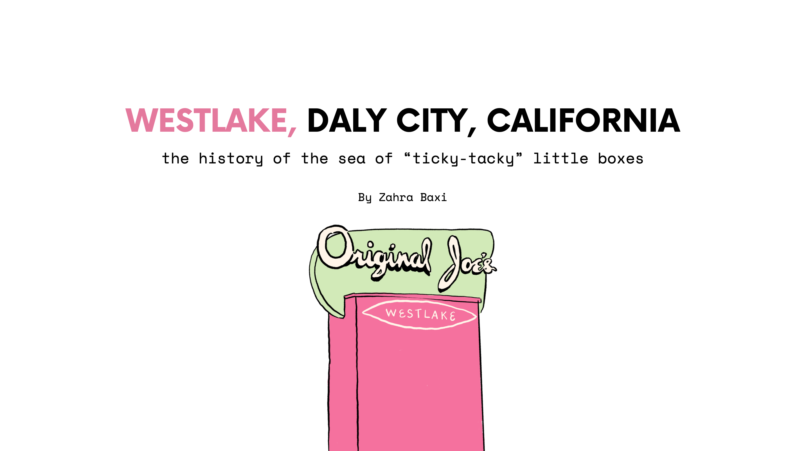

the bay
A illustrative, in progress, project on the San Francisco Bay Area During the Fall of 2023
overview
During the Fall of 2023, I was enrolled in GEOG 181, an Urban Field Studies course that has a small batch of students explore different parts of the Bay once a week. We learn about what makes each city so unqiue and some of the ways people interact within them. I’ve been personally incredibly intrested in the structures and developments of certain neighborhoods in the Bay, specifically Westlake within Daly City and Pacifica. The start of this project was initally intended to serve as a visual aid for my GEOG 181 final presentation on Westlake’s history. It has slowly expanded into a larger project that features maps of different neighborhoods and illustrations of the people and buildings there.
Here is a sneak peek at a couple illustrations done so far, that I presented for my final GEOG 181 presentation.
pardon! i'm still planning on uploading more content from this project!
